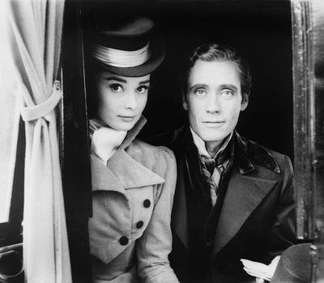
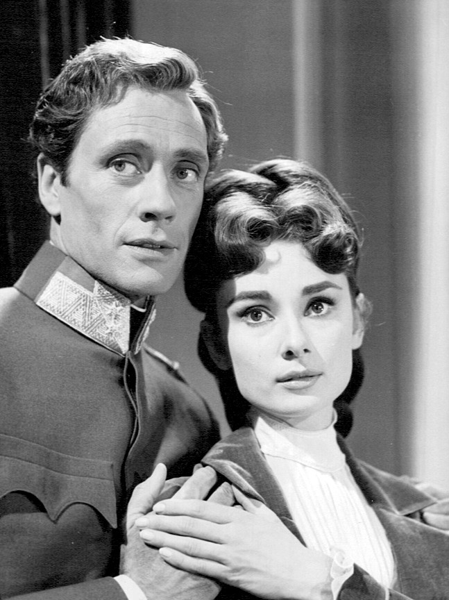

Audrey Hepburn was a British actress.
Audrey Hepburn, star of Breakfast at Tiffany's, remains one of Hollywood's greatest style icons and one of the world's most successful actresses. Recognised as a film and fashion icon, Audrey was active during Hollywood's Golden Age.
She shot to stardom for playing the lead role in Roman Holiday (1953). She then went on to star in a number of successful films, such as Sabrina (1954) and Breakfast at Tiffany's (1961).
Personal Life
In 1952, Audrey became engaged to James Hanson, whom she had known since her early days in London. She called it "love at first sight", but after having her wedding dress fitted and the date set, she decided the marriage would not work.
Audrey met American actor Mel Ferrer, and suggested that they star together in a play. The meeting led them to collaborate in the film Ondine, during which they began a relationship. Eight months later, on 25 September 1954, they were married in Bürgenstock, Switzerland. (Source: https://en.wikipedia.org/wiki/Audrey_Hepburn, retrieved on 17 September 2016)
 